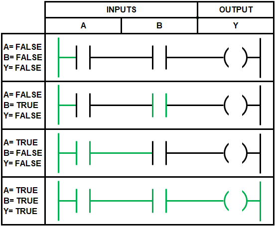

Ladder Logic

Ladder Logic is a programming language used to program PLCs. It is a graphical language based on the relay logic diagrams used in older electrical control systems. Each rung of the ladder represents a logical condition that controls an output.
- Contacts represent input conditions
- Coils represent output actions
- Rungs execute left to right, top to bottom